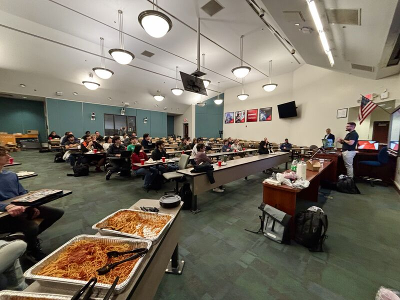

Build technical fluency
Model buses, generators, lines, and loads in PowerWorld. Change demand. Solve the system again. See the consequences instead of memorizing them.
Student-run in Gainesville, Florida
We put UF students in the room with working engineers, real system models, and the infrastructure that keeps a city running.
Open to every UF student. No dues. No prior power experience.

01 / Why we exist
Power and energy touch every hospital, home, data center, vehicle, and factory. Our job as a club is to make that enormous system legible—and then give students a way into it.
“We want students to leave with something they can explain, something they can build, and someone in the industry they can call.”
02 / The work

Model buses, generators, lines, and loads in PowerWorld. Change demand. Solve the system again. See the consequences instead of memorizing them.
Bring practitioners to campus for honest case studies on protection, controls, microgrids, commissioning, reliability, and the work behind the one-line.
Walk through generating stations and switchyards with the people responsible for serving Gainesville—not a virtual tour, a real one.
Practice the resume, elevator pitch, recruiter conversation, and follow-up that turn technical curiosity into an internship or first role.
03 / Field notes


January 20, 2026 · NEB 288
Wunderlich-Malec representatives traveled from Florida, Maine, and Massachusetts to unpack protection, control, and load-shedding for an 18 MW tri-generation plant serving critical care and research facilities.
See the event postNovember 12, 2025 · GRU
Members followed a GRU representative through new three-phase lines, the switchyard, original equipment, and the heating and power process behind the station’s Siemens generator.
February 2026 · General body meeting
Students worked through resumes, elevator pitches, booth strategy, recruiter conversations, and the follow-up that most career-fair advice skips.
A room worth funding
04 / Industry partners
We build the room where that knowledge moves: from practicing engineers to curious UF students who are choosing a field, building a skill set, and looking for the people they want to become.
Show the tradeoffs, field decisions, and failures that made a project real.
Give students a responsible look at generation, operations, testing, or controls.
Help cover project hardware, workshop materials, safety gear, food, and transport.
Build relationships through useful education, not a logo on a forgotten banner.
05 / Make it possible
Gifts to the University of Florida Power Club are processed through the official University of Florida Foundation giving account. That gives alumni, families, and industry supporters a university-managed way to invest in the club’s work.
Give through UF AdvancementStudents
You do not need a power concentration, a polished resume, or the right vocabulary. You need enough curiosity to walk into the room.